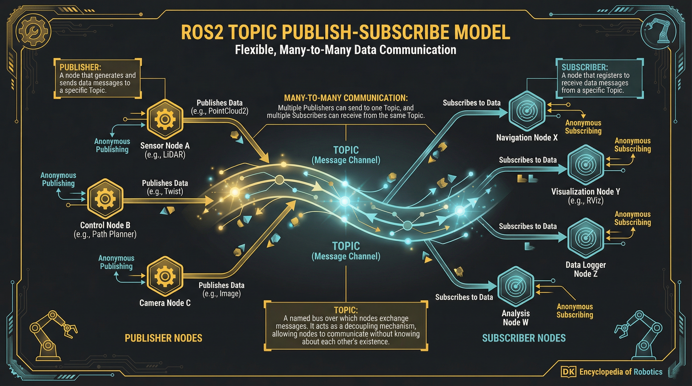

Subscriber: Node that receives messages from a topic
Topic: Named channel for message transport
Anonymous: Publishers don't know subscribers
Many-to-Many Communication
Multiple Publishers: Many nodes can publish to same topic
Multiple Subscribers: Many nodes can subscribe to same topic
Decoupled: Time and space decoupling between nodes
Async: Non-blocking message passing
Topic Architecture Diagram

Key Characteristics
Topics are for continuous data streams (sensor data, odometry). Messages are queued and delivered asynchronously. Suitable for real-time sensor fusion.